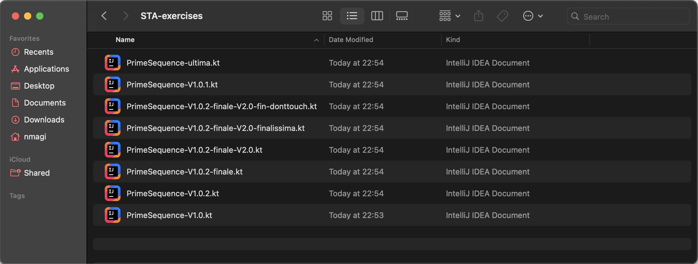
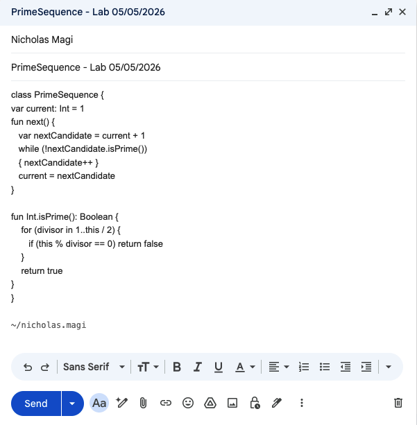
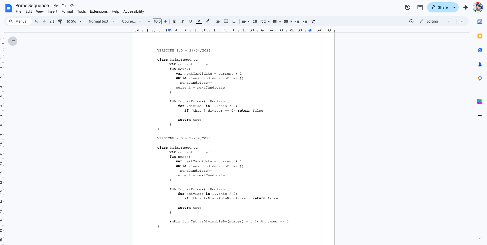
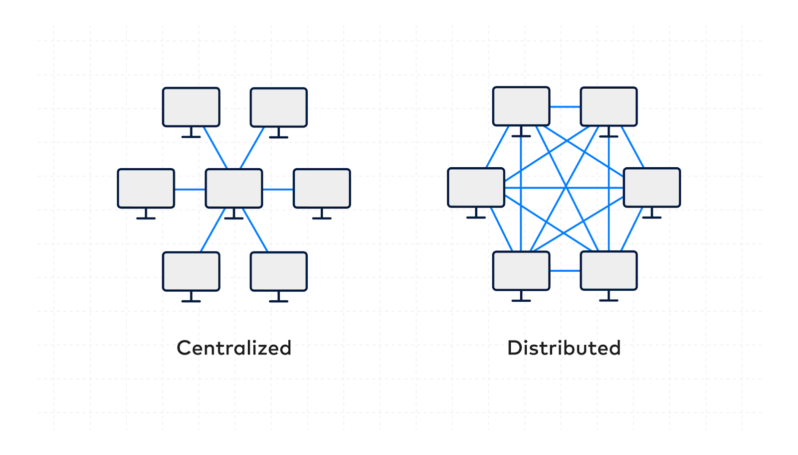

Istituto Tecnico Tecnologico “Blaise Pascal” @ Cesena
Version Control Systems: Git
“global information tracker”
or "goddamn idiotic truckload of sh*t"
A cura di Luca Casadei, Nicholas Magi
e con il prezioso contributo di Luca PulgaVersione stampabile
Fino ad ora - pt. 01

Fino ad ora - pt. 02


Fino ad ora - pt. 03
Sistemi di versionamento
Version control, also known as source control, is the practice of tracking and managing changes to software code.
Benefici principali
#1. Tracciabilità completa
È possibile tracciare la cronologia completa delle modifiche apportate ad un progetto.
#2. Ripristino semplice
È possibile tornare a versioni precedenti del progetto senza causare danni collaterali.
#3. Collaborazione agevolata
I membri del team possono lavorare su ramificazioni diverse del progetto, così da evitare sovrapposizioni e da suddividere agilmente i compiti.
Tipologie di sistemi di versionamento
Centralizzato
[Centralized Versioning Control System]
Distribuito
[Distributed Versioning Control System]

CVCS
Centralized Versioning Control System
Esiste un unico progetto centrale, e ogni sviluppatore lavora su una copia dell’ultima versione del codice.
| Caratteristica | Descrizione |
|---|---|
| Progetto centrale | Tutti i file di un progetto sono salvati in una località centralizzata. |
| Storico delle versioni | Lo storico delle versioni del progetto è centrale (vive insieme al progetto). |
| Collaborazione in tempo reale | Gli sviluppatori lavorano sulla stessa codebase, accedendo alla stessa versione del progetto e ricevendo gli stessi aggiornamenti dai colleghi. |
| Installazione semplice | I CVCS sono relativamente semplici da installare e inizializzare. |
CVCS Popolari

Sviluppato negli anni '80, ancora in utilizzo. Presenta alcune limitazioni critiche, risolte da sistemi sviluppati successivamente.
Scopri di più [Documentazione ufficiale]
Creato per risolvere le criticità di CVS. Server centralizzato, deve essere mantenuta una connessione costante per poter lavorare.
Scopri di più [Documentazione ufficiale]
Sistema molto robusto utilizzato nelle aziende enterprise. Funzionalità avanzate per ambienti di sviluppo complessi.
Scopri di più [Documentazione ufficiale]DVCS
Decentralized Versioning Control System
Ogni sviluppatore lavora su una copia del progetto di riferimento, disponendo sul proprio dispositivo di tutto lo storico delle modifiche di quest’ultimo.
| Caratteristica | Descrizione |
|---|---|
| Progetti completamente locali | Tutti i file di un progetto sono salvati in locale. Possibilità di lavorare offline. |
| Diramazioni dello sviluppo | I DVCS facilitano la diramazione dello sviluppo, permettendo di lavorare in maniera isolata su una funzionalità per poi riconciliarla con la codebase principale. |
| Nessun Single Point Of Failure | Se il progetto centrale dovesse essere perso, lo si può facilmente ricostruire partendo dalle copie a disposizione di chi ci stava lavorando. |
| Collaborazione | I DVCS permettono, attraverso un meccanismo di pull/push (vedremo tra poco), una collaborazione “decentralizzata”. |
DVCS Popolari
Creato da Linus Torvalds (creatore del kernel Linux) in 5 giorni di sviluppo. Il DVCS più conosciuto e diffuso.
Scopri di più [Documentazione ufficiale]$\uparrow$
Noi approfondiamo questo!

Da qui in poi iniziamo a parlare di Git.
Tassonomia di Git
Da ora in poi ci riferiamo al progetto su cui lavoriamo con il termine di repository.
Qualora, durante lo sviluppo di un progetto volessi salvarne lo stato, dovrei catturarne uno snapshot.
Nella tassonomia di Git, ci si riferisce a questa pratica con il termine “commit”.
Storico di un progetto
Stiamo lavorando su un progetto all’avanguardia: PrimeSequence.kt
Step 0: Creazione di una repository
- Per poter permettere a
Gitdi tracciare l’evoluzione di un progetto, occorre inizializzare la repository su cui andremo a lavorare.
Se volessimo lavorare in CLI, scriveremmo:
git init